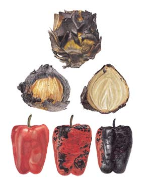

Hearth Cooking: An Ancient Cooking Technique Revisited
“On the hob, a kettle steamed; on the hearth, a cat reposed." - Charles Dickens, Our Mutual Friend
By William Rubel
December 2008/January 2009
We cannot know what dream the cat dreams while sleeping on the hearth in front of a gentle fire. We can only assume that in her obvious quietude that hers is a dream of contentment. Of our own dreams, of our pleasure at looking into flames, at feeling the moist warmth of a wood fire upon our face, there can be no question. Many a love has been kindled under the spell of the fire.
It is difficult to compare hearth cooking with cooking on a modern kitchen stove because the open hearth is so much more than a place to cook. The firelight casts its spell over the room and infuses everything cooked on the hearth with a touch of magic.
Hearth cooking is an ancient and wonderful craft. It is the craft that stands at the center of European cuisine. With few exceptions, all recipes that originated in Europe were first created on an open hearth and only adapted comparatively recently to the modern kitchen. All adaptations involve a shift, however subtle. When translating languages, even when the meaning of the words remains precisely the same, there is an inevitable shift in feeling, a shift in the poetry of sound: ocean, le mer, el mar, il mare. In making the move from the open hearth to the modern kitchen, recipes undergo two shifts: always a shift of poetry and often a shift in flavor.
Richer Flavor from Fire
Compared with the fireplace, the modern kitchen stove and oven, even taken together, are one-dimensional. As you begin to cook on your fireplace, and as you begin to adapt your repertoire from the kitchen stove to the open hearth, you will discover that your fireplace - or campfire or the familiar barbecue - are cooking tools of undreamed potential. When cooking with live fire, most everything can be made to taste better: stronger, deeper, richer, more striking.
If you don’t have a fireplace, or if it’s summer, then what to do? The household fireplace is really nothing more than a campfire that was brought indoors, moved against a wall, and then set under a chimney. Everything you can cook on a fireplace you can cook on a campfire - which means virtually every recipe in any cookbook. When I say campfire, I’m thinking of a fire that is built on the flat ground, not set down inside a pit. A barbecue and fire pit can also be used for hearth cooking, but the best and most flexible options are the traditional fireplace and campfire. That is because they offer the greatest range of access to all aspects of the fire: a level space in front of the fire, space on the embers beside the fire, easy access to the hot ashes that surround the fire, and, of course, the space directly over the fire, which makes it easy to tend.
The art of hearth cooking is the art of improvisation. Once you actually start, the naturalness of the process will carry you along. You either already own whatever you need, or you will be able to improvise what you need out of easily acquired parts - such as common red bricks and a small barbecue grill. In my experience, the single most important requirement for the hearth cook is a love of fire and a spirit of culinary adventure. If you’ve got both of those, then hearth cooking is for you.
Approaching the Hearth
What follows are practical instructions for getting started. For more detail on these techniques, and to learn others, I recommend the hearth cooking section of the 2007 edition of Joy of Cooking and my own book, The Magic of Fire.
I start here with the complete vision: an entire meal cooked on the hearth. The most delightful description of such a meal comes from Charles Dickens’ Dombey and Son, in which a dinner is prepared by Captain Cuttle for Florence while she is sleeping, and while his heart is bursting with a sense of his impotence as her protector. The Captain’s kitchen is a small parlor fire.
The Captain had spread the cloth with great care, and was making some egg-sauce in a little saucepan: basting the fowl from time to time during the process with a strong interest, as it turned and browned on a string before the fire. Having propped Florence up with cushions on the sofa, which was already wheeled into a warm corner for her greater comfort, the Captain pursued his cooking with extraordinary skill, making hot gravy in a second little saucepan, boiling a handful of potatoes in a third, never forgetting the egg-sauce in the first, and making an impartial round of basting and stirring with the most useful of spoons every minute. Besides these cares, the Captain had to keep his eye on a diminutive frying-pan, in which some sausages were hissing and bubbling in a most musical manner; and there was never such a radiant cook as the Captain looked, in the height and heat of these functions: it being impossible to say whether his face or his glazed hat shone the brighter.
Captain Cuttle was not used to cooking such complex meals on his hearth - and his batterie de cuisine was minimal. Dickens emphasizes the small saucepans and diminutive frying pan - a good cue for us. Captain Cuttle’s meal is one every reader can aspire to, either on a fireplace or a campfire. One can use what one has, even if it might not be the most ideal piece of cookware. The food will taste just as good. Hearth cooking, by its nature, is an improvisational dance that fully engages the spirit, especially when one is cooking a meal out of love.
To be historically accurate, I should note that Captain Cuttle may have cooked on a fireplace burning coal, in which case he would have placed his cookware on a grate over the coal. In North America, we burn wood. Had he been burning wood, and he might have, then this is how he would have cooked his meal. With the exception of the chicken turning on a string in front of the fire (an ancient and practical way to roast a fowl), Captain Cuttle would have cooked on the hearth in cookware that was positioned no more than a few inches from the fire, and held above the hearth on a little stand so embers could be shoveled underneath. The best height for the cookware is about 2 1/2 inches above the hearth. Captain Cuttle would have been using an iron trivet, but two common red bricks can be fashioned into the perfect stand of the correct height. Set two bricks on their broad side parallel to each other so you can straddle them with a saucepan, frying pan, griddle or grill, and have space to shovel embers between them.
Taming the Flames
We are used to cooking with bottom heat on our kitchen stove and when grilling on the barbecue. Controlling heat on the hearth is precise, and different from both the kitchen stove and the barbecue. On the hearth, you control heat by shoveling embers under the cookware to increase heat, and you decrease heat either by letting the embers die down naturally, or by shoveling them back into the fire. Through the thoughtful use of embers you have complete control over temperature. Four small embers may be enough to melt butter in a small saucepan; a double fireplace shovel-full spread under a grill will cook a savory steak.
Safety issues are basic. When you have embers on the hearth, be sure to maintain a strong fire in the fireplace to pull fumes and smoke up the chimney. Always keep embers within a few inches of the fire; always shovel them back into the fireplace when done, and always use common sense.
The best way to learn to cook like Captain Cuttle is to make something simple, such as a frittata or scrambled eggs. Set two bricks on their broad side within a few inches of the fire. Straddle them with a frying pan and use the fireplace shovel to place embers underneath. Add butter to the pan. When it melts, swirl it around the pan, then add your eggs. If the pan doesn’t get hot enough, add more embers, if it gets too hot, take some away. Always remember that the embers will never be hotter than the moment you shovel them underneath the pan. You are always cooking on falling heat which, in practice, means you probably won’t burn what you are cooking if you look away.
An Even Simpler Way
The hearth cooking method just described stains the hearth. The second method I describe makes no mess. And, in many ways, it is the best introduction to hearth cooking because it is so simple and elegant. This method works for fireplace or campfire, but not the barbecue. The same heat that warms your face as you sit in front of the fire will heat a pot of water. It’s that simple. Push a teapot within a couple inches of the fire to simmer water for tea. It will simmer on the side closest to the flames. Little in this world is more comforting than a cup of tea taken in the light of the fire on a cold stormy day - and when it is heated by that same fire you add a dimension of poetry to the cup of tea that makes it even more special.
Cooking by the fire’s light is silent. It is lyrical. It is as stress-free a cooking method as there can be. Its strength as a cooking method is in gently melding flavors. It might take all day, from morning until dinnertime, but it’s the preferred cooking method for stews, beans, soup stocks and many one-pot meals, such as the French poule au pot.
Start by placing the cooking pot filled with ingredients directly on the hearth a couple inches from the flames. Control heat by moving the pot closer to or farther from the fire. At your discretion, you can also speed things up by using the fireplace shovel or poker to push embers up against the side of the pot closest to the flames. When reheating a sauce, such as pasta sauce, I usually push the saucepan right up against the embers and stir, as needed, until it is hot. When you use this method to cook something that has lots of liquid, soup stock for example, stirring is rarely needed because of convection currents within the pot. Many dishes cooked by the fire’s light stir themselves.
Ember Cooking
The last method I describe is cooking directly on embers within the fireplace itself. This method is appropriate for the fireplace, the campfire and the barbecue. The most ancient griddle was a bed of embers, and it is on embers that the most distinctive flavors of the hearth are created. Ember-cooking is the opposite of slow cooking - working at 1,000 degrees Fahrenheit!
John 21:9 in the New Testament reads, “As soon as they were come to land, they saw a fire of coals there, and fish laid thereon, and bread.” Fish and bread can, indeed, be baked directly on embers. I do it all the time. Cooking on embers is a method that takes us back long before the Bible, to the first cooked meals. It is a rustic method - but it is a mistake to conflate rustic methods with unsophisticated flavors.
To cook whole fish on embers, first rub their insides with salt and lightly stuff them with parsley and a little bit of chopped tomato. When the fish are at room temperature, make a flat bed of embers slightly larger than your fish beside the fire and lay the fish on the embers. When it is time to turn them, use a spatula or long-handled barbecue tongs to turn them onto fresh embers. Fish are done when the flesh is flaky. In my experience, the results are invariably delicious - and how many dishes can one cook from a book that is 2,000 years old?
Dense vegetables are best for roasting on embers. Examples include potatoes and eggplants (pierced first with a knife so they won’t explode), onions, sweet and spicy peppers, fennel, carrots and turnips. I usually get vegetables into the embers by just tossing them there. Long-handled barbecue tongs usually work to get vegetables out - eggplants might require the use of the shovel. Counter-intuitively, when food is placed directly on glowing embers it tends to put them out. Thus, as with the fish, when turning vegetables, move them to fresh embers.
When ember-cooked foods are done, for example when onions or beets can be pierced with a fork, remove from the embers, let cool, then peel away what is burned. What remains is always suffused with flavor and may be suitable for an appetizer as is. Or you may want to incorporate the vegetable into another dish, for example, a vinaigrette for sliced beets or roast onions with baked chicken. Ember-roasted eggplants are delicious mashed with garlic, olive oil and salt, and served as a spread.
If you are just roasting a few dense vegetables, you will be able to toss them into the embers right beside the fire, or even amongst the burning logs. But for cooking fish or flat breads, or lots of vegetables, one needs a large flat bed of embers. If working in the fireplace, it is easier to produce a bed of embers that you can spread out beside the fire if you build the fire exactly the way you would a campfire. Build the fire on the floor of the fireplace, ideally on a bed of ash, rather than raised up above the fireplace floor on iron fire dogs or on an iron fire grate. If you use two logs set on the floor of the fireplace in lieu of iron fire dogs, and build a fire on top of them, you will usually have enough embers to spread next to the fire when the first set of hardwood logs have burned down. (This method of managing the fire is actually best for all hearth cooking.) If working on a barbecue, always use mesquite charcoal.
While hearth cooking is not for every day, it can be for special days, and for special ingredients. If your garden produces just enough dried beans for one pot of beans, then make that dish on the hearth. For the romantic, for the lover of good food, for the serious amateur cook, and for the professional chef, hearth cooking offers both a world of sensory pleasure and a laboratory for culinary experimentation.
Materials
Warning: Once you begin cooking over an open fire, you may get hooked on this peaceful form of meditation! Eventually, the consummate hearth-cooking chef will want the full setup:
- Small shovel
- Long-handled tongs
- Long-handled fork
- 5- and 7-quart Dutch ovens
- Iron tripod with 2 1/2 inch legs
- Iron grill with 2 1/2 inch legs
- Pair of Kevlar gloves
- Ceiling hook, 2 short skewers, and a length of string for string roasting
- Pot hook to lift the lid of the Dutch oven
- Griddle and other pots and pans
- Blow pipe or bellows
HIGHLY RECOMMENDED by the Mother Earth News editors:
The Magic of Fire: Hearth Cooking: 100 Recipes for the Fireplace or Campfire by William Rubel. This lovely book has quickly become a beloved favorite of the Mother Earth News editors. Whether you’re an adventurous cook, a romantic with a taste for the simple and beautiful, or just a DIY nut, you’ll be inspired by Rubel’s eloquent history of hearth cooking and the nitty-gritty of how to cook great food over soft flames and glowing coals. Order now.
|
IAN EVERARD On the hob, a kettle steamed; on the hearth, a cat reposed. - Charles Dickens, Our Mutual Friend |
 IAN EVERARD |
IAN EVERARD Cooking by the fire’s light is silent. It is lyrical. It is as stress-free a cooking method as there can be. |
|
IAN EVERARD Ember-baked fish cooks quickly, charring the outside while yielding moist, tender flesh. |
 IAN EVERARD Artichokes, onions, peppers and most other dense vegetables roast beautifully on a bed of embers. |
|